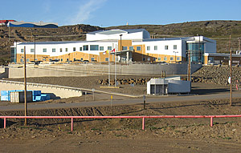
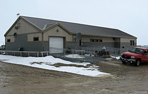
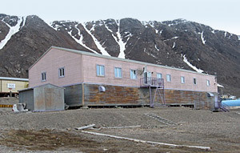
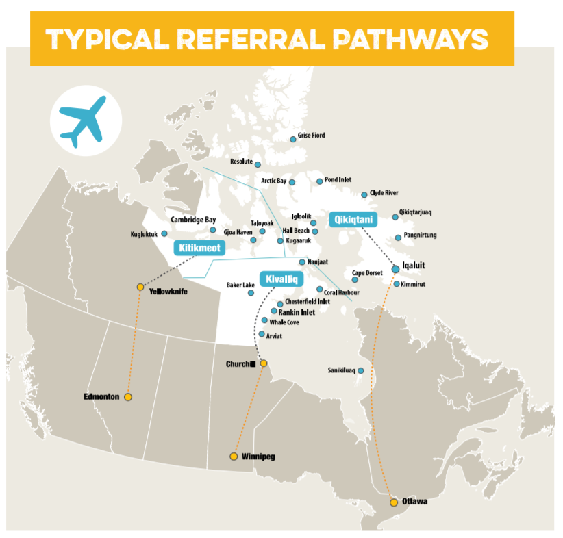
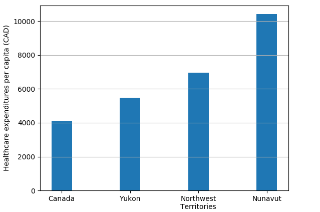
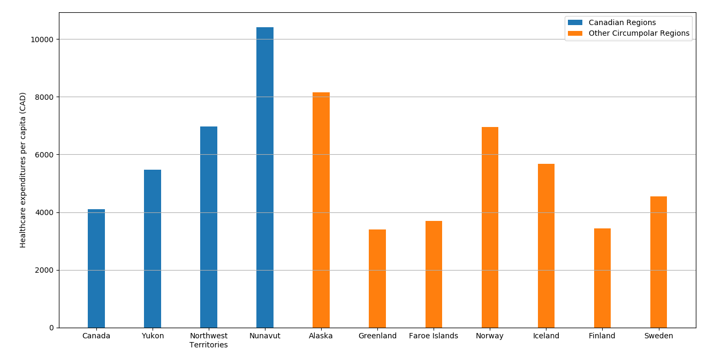
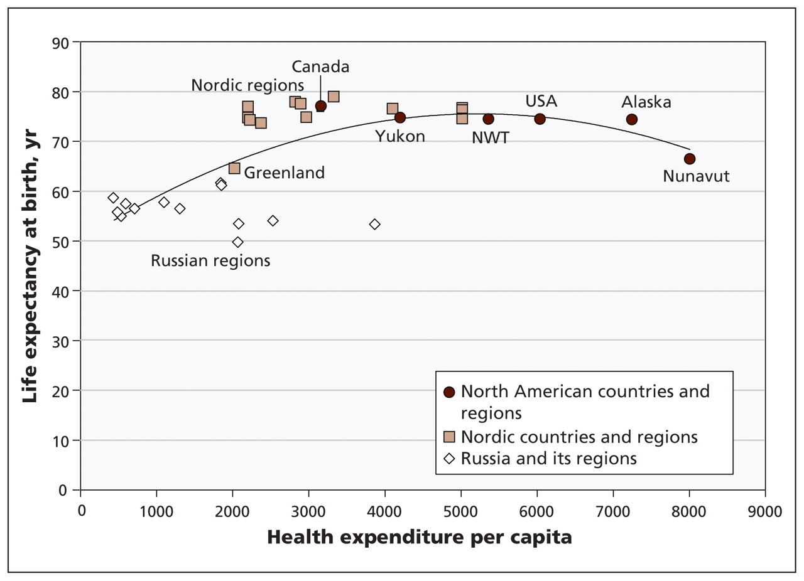

Providing effective healthcare in arctic regions is difficult due to a variety of challenges. Several of the factors that affect northern healthcare include:
In order to properly assess the some of the issues with healthcare in Canada’s north, the Nunavut healthcare system will be compared with other arctic healthcare systems and healthcare in non-arctic Canada. Examining how these challenges are addressed in other regions may provide insight on how healthcare in Canada’s north can be improved.
Similar to the rest of Canada, northern healthcare is provided universally through government funding [1]. However, providing healthcare in the north is a more complicated matter compared to the rest of Canada.
Access to healthcare facilities is much more limited in northern Canada. For example, Nunavut (Canada’s largest territory at 2,093,190km2) is served by 25 local health centres. These centres include 2 regional facilities in Cambridge Bay and Rankin Outlet, as well as 1 public health facility, 1 family practice clinic, and the Qikiqtani hospital, all of which are in Iqualuit [2].
Interactive map of Nunavut health centres   These small health centres are staffed by nurses and physicians and provide only basic care. Specialized care often requires a person to travel to referral centres in Ottawa, Winnipeg, Yellowknife, and Edmonton [2]. Some limited specialized care is also available at the Qikiqtani hospital [4].
Limited access to healthcare is a major issue for northern Canadian communities. Medical Travel is one of the largest healthcare expenditures in northern territories [4]. As a result, effective healthcare is made significantly more expensive in the north. The chart below shows healthcare expenditures per capita in Canada vs. Canada’s northern territories.
All of Canada’s northern territories have health expenditures much higher than the national average. Nunavut has especially high health expenditures at nearly 2.5 times the national average. In the 2016-17 fiscal year medical travel was the largest expenditure of the department of health. Nearly 32,000 medical trips, costing approximately $74M, consumed almost 20% of the $371M health budget. [4]
Harsh weather conditions are another factor that impact the accessibility of healthcare. Patients are often required to travel by air to obtain medical treatment. Inclement weather can render this mode of transportation unavailable for extended periods of time, delaying necessary treatment or diagnosis [6].
The inaccessibility of treatment and diagnosis may lead to increased spread of infectious diseases or development of cancers. Canadian Inuit have the highest rate of lung cancer death in the world and are 170 times more likely to become infected with tuberculosis compared to the average Canadian [1].
Mental health is also a larger issue in the north compared to the rest of Canada. A study published in 2013 reported that the suicide rate in Nunavut is 10 times greater than the Canadian average. Almost of two thirds of the 120 suicides that were studied involved people who had been diagnosed with severed depression but only 17% had ever been hospitalized for mental illness or prescribed medication [7].
Canada’s circumpolar neighbours share the same challenges and obstacles regarding healthcare. It may be useful to examine issues that other countries have been able to successfully address to find out how to better overcome similar challenges in Canada’s north.
Shown in this chart are the expenditures per capita of Canadian Territories compared to the expenditures of their circumpolar neighbours.
Nunavut remains with the highest expenditures per capita and apart from Alaska and Norway, Canada's northern territories spend more per capita on healthcare than all other regions. Although Canada is spending considerable amounts of money on healthcare this does not necessarily equate to better health outcomes. Another figure that reveals more on the effectiveness of northern healthcare is the following chart that compares life expectancy at birth with health expenditures in various Northern regions.
Nunavut, despite having the highest health expenditures of any arctic region has the third lowest life expectancy at birth (68.2 years), beating only Greenland (68 years) and Russia (65.5 years). However, this might be expected in Greenland in Russia considering that these regions also spend the least on healthcare per capita.
All Nordic regions, apart from Greenland, have average life expectancies at birth greater than 77 years with an average life expectancy of 79.1 years. These regions also spend the lowest on healthcare per capita. Although each region faces slightly different challenges in providing healthcare these statistics suggest that the Nordic regions could be a good example to learn from for improving healthcare in the Canadian north [5].
Determinants of heath are key factors that combine to affect the health of an individual or a community. One method for improving the health of a communities is by improving individual determinants of health. A key determinant of health in northern communities is the availability of health services. The main issues and challenges that limit the availability of health services in northern Canada are summarized here.
Low population density means that healthcare centres must be small and spread out. Operating these centres to serve small populations requires high expenditures per capita. Small health centres are also unable to provide specialized care, requiring patients to travel to regional or out-of-territory health centres.
Specialized care is unavailable in communities and limited at regional centres. Patients that require specialized treatment must take long trips to referral health centres. Difficulty in acquiring specialized care can delay necessary treatment or diagnosis of infectious diseases and cancer. Challenging weather conditions can also delay medical trips.
Limited social services leave communities vulnerable to mental health issues. Elderly and people suffering from chronic illness may not be able to find consistently available care or treatment in their home communities.
Understanding these issues will be the core of determining how the healthcare systems in Canada’ north can be improved.